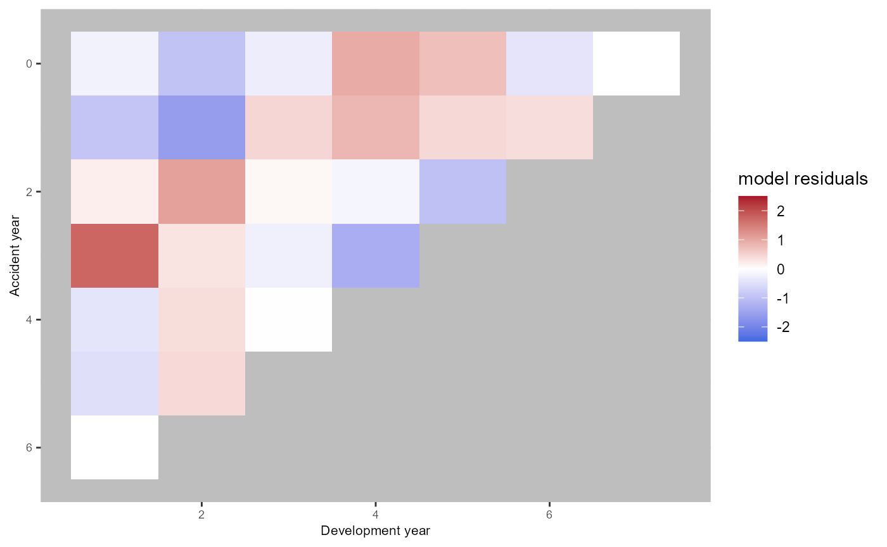
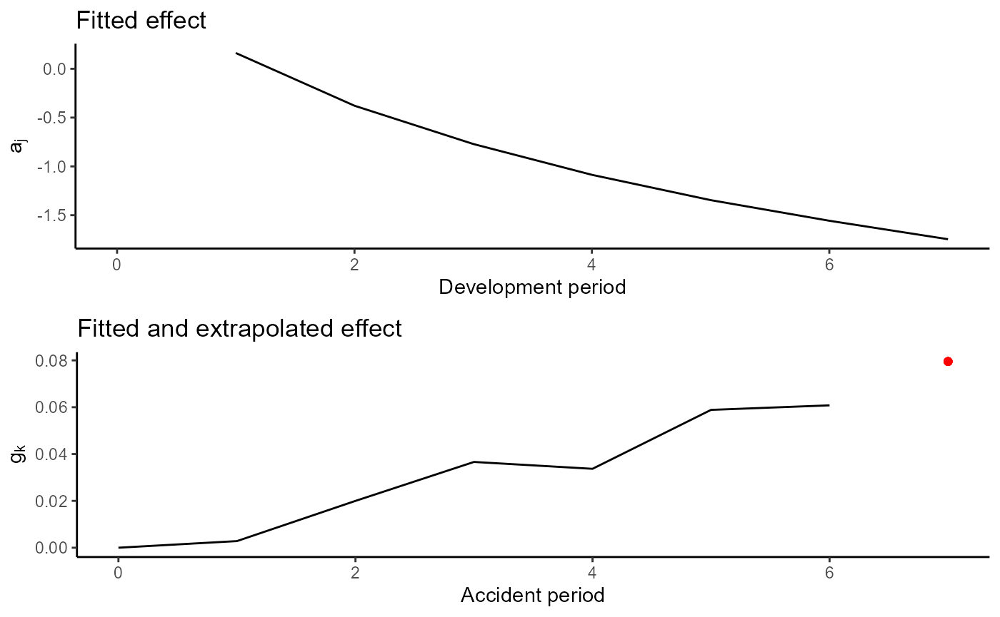

Introduction
The clmplus package aims to offer a fast and
user-friendly implementation of the modeling framework introduced in our
paper, Pittarello, Hiabu, and Villegas
(2025).
In this vignette:
We replicate the chain-ladder model using an age-model for the claim development. We can replicate the chain ladder model using an age-model for the claim development. As discussed in the paper, modeling claim development allows us to replicate chain-ladder estimate for claims reserve using fewer parameters than modeling claim amounts (England and Verrall (1999)).
We provide an example illustrating how incorporating a cohort effect can enhance model fit.
Before proceeding, we summarise in a table the notation of the claim
development models implemented in clmplus package. The
implementation of the models for the claim development available in the
clmplus is based on the implementation of the models for
human mortality implemented in the StMoMo package. Users
can either rely on our default models or set their own configuration for
the claim development.
| Model | Lexis dimension | Claims reserving |
|---|---|---|
| a | age | development (chain-ladder model) |
| ac | age-cohort | development-accident |
| ap | age-period | development-calendar |
| apc | age-period-cohort | development-calendar-accident |
Replicate the chain-ladder with the clmplus
package
For this tutorial, we use the AutoBIPaid run-off
triangle available in the ChainLadder package (Gesmann et al. (2025)).
The data is pre-processed using the AggregateDataPP
method.
The desired model is fit using the clmplus method.
a.model.fit=clmplus(AggregateDataPP = pp_data,
hazard.model = "a")
#> StMoMo: The following ages have been zero weighted: 1
#> StMoMo: The following years have been zero weighted: 1
#> StMoMo: The following cohorts have been zero weighted: -7 -6 -5 -4 -3 -2 -1 7
#> StMoMo: Start fitting with gnm
#> StMoMo: Finish fitting with gnmOut of the fitted model, it is possible to extract the fitted development factors:
a.model.fit$fitted_development_factors
#> [,1] [,2] [,3] [,4] [,5] [,6] [,7] [,8]
#> [1,] NA 4.098156 2.087506 1.619294 1.414518 1.302461 1.236005 1.191122
#> [2,] NA 4.098156 2.087506 1.619294 1.414518 1.302461 1.236005 NA
#> [3,] NA 4.098156 2.087506 1.619294 1.414518 1.302461 NA NA
#> [4,] NA 4.098156 2.087506 1.619294 1.414518 NA NA NA
#> [5,] NA 4.098156 2.087506 1.619294 NA NA NA NA
#> [6,] NA 4.098156 2.087506 NA NA NA NA NA
#> [7,] NA 4.098156 NA NA NA NA NA NA
#> [8,] NA NA NA NA NA NA NA NAIt is also possible to extract the fitted effects on the claims development.
a.model.fit$fitted_effects
#> $fitted_development_effect
#> 0 1 2 3 4 5 6
#> NA 0.1950754 -0.3503294 -0.7489324 -1.0689916 -1.3366344 -1.5554467
#> 7
#> -1.7461089
#>
#> $fitted_calendar_effect
#> NULL
#>
#> $fitted_accident_effect
#> NULLPredictions can be computed with the predict method.
a.model <- predict(a.model.fit)Out of the model predictions, we can extract the predicted development factors, the full and lower triangle of predicted cumulative claims.
a.model$development_factors_predicted
#> [,1] [,2] [,3] [,4] [,5] [,6] [,7] [,8]
#> [1,] NA NA NA NA NA NA NA NA
#> [2,] NA NA NA NA NA NA NA 1.191122
#> [3,] NA NA NA NA NA NA 1.236005 1.191122
#> [4,] NA NA NA NA NA 1.302461 1.236005 1.191122
#> [5,] NA NA NA NA 1.414518 1.302461 1.236005 1.191122
#> [6,] NA NA NA 1.619294 1.414518 1.302461 1.236005 1.191122
#> [7,] NA NA 2.087506 1.619294 1.414518 1.302461 1.236005 1.191122
#> [8,] NA 4.098156 2.087506 1.619294 1.414518 1.302461 1.236005 1.191122
a.model$lower_triangle
#> [,1] [,2] [,3] [,4] [,5] [,6] [,7] [,8]
#> [1,] NA NA NA NA NA NA NA NA
#> [2,] NA NA NA NA NA NA NA 74756.02
#> [3,] NA NA NA NA NA NA 75506.30 89937.23
#> [4,] NA NA NA NA NA 67786.58 83784.54 99797.62
#> [5,] NA NA NA NA 55952.67 72876.17 90075.29 107290.68
#> [6,] NA NA NA 35679.53 50469.34 65734.34 81247.96 96776.25
#> [7,] NA NA 24926.91 40364.00 57095.61 74364.80 91915.25 109482.29
#> [8,] NA 11478.94 23962.35 38802.09 54886.26 71487.21 88358.53 105245.81
a.model$full_triangle
#> [,1] [,2] [,3] [,4] [,5] [,6] [,7] [,8]
#> [1,] 1904 7302.00 14798.00 23680.00 33392.00 43463.00 53662.00 63918.00
#> [2,] 2235 8496.00 17187.00 27630.00 38976.00 50730.00 62761.00 74756.02
#> [3,] 2441 9789.00 20451.00 33106.00 46854.00 61089.00 75506.30 89937.23
#> [4,] 2503 10676.00 22486.00 36662.00 52045.00 67786.58 83784.54 99797.62
#> [5,] 2838 11550.00 24278.00 39556.00 55952.67 72876.17 90075.29 107290.68
#> [6,] 2405 10263.00 22034.00 35679.53 50469.34 65734.34 81247.96 96776.25
#> [7,] 2759 11941.00 24926.91 40364.00 57095.61 74364.80 91915.25 109482.29
#> [8,] 2801 11478.94 23962.35 38802.09 54886.26 71487.21 88358.53 105245.81We can also predict for different forecasting horizons. Below
predictions for one calendar period ahead. The forecasting horizon can
be specified with the forecasting_horizon argument in the
predict method.
a.model.2 <- predict(a.model.fit,
forecasting_horizon=1)We compare our estimates with those obtained with the Mack
chain-ladder method (Mack (1993)) as
implemented in the ChainLadder package. We predict the same
reserve as the literature benchmark.
mck.chl <- MackChainLadder(input_data)
ultimate.chl=mck.chl$FullTriangle[,dim(mck.chl$FullTriangle)[2]]
diagonal=rev(t2c(mck.chl$FullTriangle)[,dim(mck.chl$FullTriangle)[2]])Estimates are gathered in a data.frame for
comparison.
data.frame(ultimate.cost.mack=ultimate.chl,
ultimate.cost.clmplus=a.model$ultimate_cost,
reserve.mack=ultimate.chl-diagonal,
reserve.clmplus=a.model$reserve
)
#> ultimate.cost.mack ultimate.cost.clmplus reserve.mack reserve.clmplus
#> 1 63918.00 63918.00 0.00 0.00
#> 2 74756.02 74756.02 11995.02 11995.02
#> 3 89937.23 89937.23 28848.23 28848.23
#> 4 99797.62 99797.62 47752.62 47752.62
#> 5 107290.68 107290.68 67734.68 67734.68
#> 6 96776.25 96776.25 74742.25 74742.25
#> 7 109482.29 109482.29 97541.29 97541.29
#> 8 105245.81 105245.81 102444.81 102444.81
cat('\n Total reserve:',
sum(a.model$reserve))
#>
#> Total reserve: 431058.9Claims reserving with GLMs compared to hazard models
We fit the stochastic model replicating the chain-ladder with an
age-cohort GLM for the claim amounts described in England and Verrall (1999) using the
apcpackage Fannon and Nielsen
(2020).
library(apc)
#> Warning: package 'apc' was built under R version 4.4.3
ds.apc = apc.data.list(cum2incr(dataset),
data.format = "CL")
ac.model.apc = apc.fit.model(ds.apc,
model.family = "od.poisson.response",
model.design = "AC")Inspect the model coefficients derived from the output:
ac.model.apc$coefficients.canonical[,'Estimate']
#> level age slope cohort slope DD_age_3 DD_age_4 DD_age_5
#> 7.41596168 0.74105900 0.16519698 -1.16411707 -0.02909890 -0.17467013
#> DD_age_6 DD_age_7 DD_age_8 DD_cohort_3 DD_cohort_4 DD_cohort_5
#> -0.17533888 0.17408744 -0.55360421 0.02140672 -0.07364998 -0.03603392
#> DD_cohort_6 DD_cohort_7 DD_cohort_8
#> -0.15911660 0.20095088 -0.17521544
ac.fcst.apc = apc.forecast.ac(ac.model.apc)
data.frame(reserve.mack=ultimate.chl-diagonal,
reserve.apc=c(0,ac.fcst.apc$response.forecast.coh[,'forecast']),
reserve.clmplus=a.model$reserve
)
#> reserve.mack reserve.apc reserve.clmplus
#> 1 0.00 0.00000 0.00
#> 2 11995.02 67.23865 11995.02
#> 3 28848.23 345.18727 28848.23
#> 4 47752.62 940.68770 47752.62
#> 5 67734.68 2350.85562 67734.68
#> 6 74742.25 4466.77443 74742.25
#> 7 97541.29 9103.24335 97541.29
#> 8 102444.81 14480.43832 102444.81Our method is able to replicate the chain-ladder results without adding the cohort component.
a.model.fit$fitted_effects
#> $fitted_development_effect
#> 0 1 2 3 4 5 6
#> NA 0.1950754 -0.3503294 -0.7489324 -1.0689916 -1.3366344 -1.5554467
#> 7
#> -1.7461089
#>
#> $fitted_calendar_effect
#> NULL
#>
#> $fitted_accident_effect
#> NULLFurther inspection can be performed with the clmplus
package, which provides the graphical tools to inspect the fitted
effects. The fitted effects can be plotted using the plot
function on the output of the predict method.
plot(a.model)
Adding a cohort effect on the claim development model
By adding a cohort component to the claim development model, we
improve the scaled-deviance residuals. The scaled-deviance residuals can
be plotted using the plot function on the output of the
clmplus method.
#make it triangular
plot(a.model.fit)
The red and blue areas suggest that there are some trends that the age-model wasn’t able to catch.
ac.model.fit <- clmplus(pp_data,
hazard.model="ac")
#> StMoMo: The following ages have been zero weighted: 1
#> StMoMo: The following years have been zero weighted: 1
#> StMoMo: The following cohorts have been zero weighted: -7 -6 -5 -4 -3 -2 -1 7
#> StMoMo: Start fitting with gnm
#> StMoMo: Finish fitting with gnm
ac.model <- predict(ac.model.fit,
gk.fc.model='a')
plot(ac.model.fit) The fitted effect are displayed below. The cohort component is extrapolated for the last available accident period as discussed in our paper.
plot(ac.model)
Modelling a period effect on the claim development
It is also possible to add a period component and choose an age-period model or an age-period-cohort model.
ap.model.fit = clmplus(pp_data,
hazard.model = "ap")
#> StMoMo: The following ages have been zero weighted: 1
#> StMoMo: The following years have been zero weighted: 1
#> StMoMo: The following cohorts have been zero weighted: -7 -6 -5 -4 -3 -2 -1 7
#> StMoMo: Start fitting with gnm
#> StMoMo: Finish fitting with gnm
ap.model<-predict(ap.model.fit,
ckj.fc.model='a',
ckj.order = c(0,1,0))
apc.model.fit = clmplus(pp_data,hazard.model = "apc")
#> StMoMo: The following ages have been zero weighted: 1
#> StMoMo: The following years have been zero weighted: 1
#> StMoMo: The following cohorts have been zero weighted: -7 -6 -5 -4 -3 -2 -1 7
#> StMoMo: Start fitting with gnm
#> StMoMo: Finish fitting with gnm
apc.model<-predict(apc.model.fit,
gk.fc.model='a',
ckj.fc.model='a',
gk.order = c(1,1,0),
ckj.order = c(0,1,0))There is no clear difference between the residuals plot obtained using an age-period model compared to the residuals plot obtained using the age-cohort model. Conversely, the plot seems to improve using an age-period-cohort model.
plot(ap.model.fit)
plot(apc.model.fit)
Below, the effects of the age-period-cohort model.
plot(apc.model)